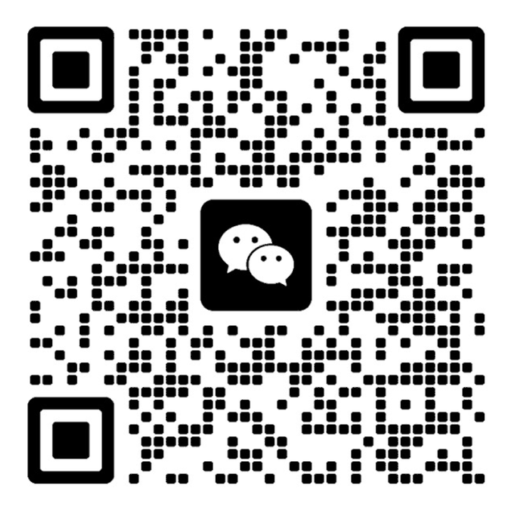

没问完的问题
诊疗时间有限，想问的事没问清，回国后才发现还有疑问。
在韩国，
不因为语言吃亏。
当下没听懂、没问清楚，回国才后悔，这种事不该发生。
委托之前，先申请免费事前咨询。回复时间 08:30~20:30（韩国时间）。
WHAT'S AT STAKE
在陌生的医疗环境里，下面这些情况都可能发生。
诊疗时间有限，想问的事没问清，回国后才发现还有疑问。
注意事项、禁忌与复诊时间若听错或漏听，可能影响术后护理。
同意书、费用与方案没完全理解就签字，事后容易产生分歧。
WHAT WE DO
告诉我们服务项目、日期与地点，安排合适的翻译。

从咨询、同意书到术后复诊，把医生的说明照实转达。
色彩测试用语、头发长度与颜色、拍摄妆发需求，说清楚再开始。
餐厅、购物、柜台沟通，行程中需要开口的地方由翻译协助。
拜访公司、展会洽谈、工厂参观、签约场合的交替传译。
全程由同一位翻译陪同，行程不对外公开。
OUR APPROACH
翻译的目的，是让你听懂之后自己做决定。
不存在的事实不会说，医生与对方的说明照实转达。
项目与费用在咨询时、进行前、付款前各确认一次，按谈好的内容付款。
结束后的简单追加提问，由了解现场的同一位翻译继续协助。
一句话可以被翻译，但一次医疗决定需要被真正理解。
赴韩留学后定居韩国，2007年起从事中韩口译的现任医疗翻译。2015年曾在中国访问团拜会韩国地方政府时担任市长随行口译，如今往来于医院咨询室与商务会议现场。
代表翻译与 3 位协力翻译，同一天最多可安排 5 位。使用语言：韩语、中文（简体・繁体）。
HOW IT WORKS
先告诉我们服务项目、日期与地点，我们先确认可安排的翻译与费用。
服务项目・日期・地点・人数（可视频）
先说明范围与费用，确认后才开始
结束后的简单提问也继续协助
个人资料、就诊信息与现场沟通内容均按保密原则处理，仅用于本次服务安排。
如实传达医生的说明，不添加、不美化。
口译员不提供医疗建议，治疗与费用由您与医生决定。
范围与报价确认后才开始服务。
每小时 ₩30,000 起
约 ¥150
另行协商
多日行程、VIP 私人随行
换算为固定参考值，以韩元为准。付款：现金（可用各国货币）、微信支付等。提供交替传译，不提供同声传译。
SELECTED SCENARIOS
第一则为实际经验，医院与客人信息不公开。

柜台把项目剂量写得比客人要的多。付款前发现并请院方更正，最后只结了客人要的项目与费用。
重点：付款前再确认一次
术前与复诊最怕漏掉风险和护理要点。我们准确传达风险、预期与术后护理，并在结束前与您再次确认理解一致。
重点：风险信息不遗漏
回到住处才想到的问题，由了解现场的同一位翻译继续协助。
重点：责任口译FAQ
没有找到答案？可以先发送科室、日期和地点，我们会确认后回复。
可覆盖初诊、检查说明、项目或手术咨询、术前沟通、术后复诊与护理说明，按实际需要安排。
可以先提交时间、地点与科室，我们会优先确认可用口译员并尽快回复。是否可安排以当日档期为准。
每小时 ₩30,000 起，按时间、地点、难度与事前准备报价；长期或全程陪同另行协商。确认后才开始。
口译员遵循保密原则，个人资料和诊疗内容仅用于服务安排与现场沟通，不对外公开。
问路、点餐用 App 就够了。但项目、剂量、费用、同意书这类说错就有损失的内容，需要有人当场确认双方理解一致。
支持诊断书、检查报告、同意书、术后指导等中韩翻译。请先发送文件类型与页数确认范围。
不会。口译员只负责准确传达，不提供医疗建议，也不替医生或您做决定。治疗与费用由您与医生决定。
不会。我们遵循不夸大、不省略的原则，保留医生说明的专业边界。
可以先告诉我们就诊目的与顾虑，我们协助整理需要向医生确认的问题清单。
可以。简单的追加提问由同一位翻译继续协助（责任口译）。
可以。来韩国之前可先用视频做免费事前咨询。
START A CONVERSATION
发来「服务项目／日期／地点／人数」，先确认可安排的翻译与费用。回复时间 08:30~20:30（韩国时间）。
cmdlabkr@gmail.com 免费下载《就诊前问题清单》（PDF）